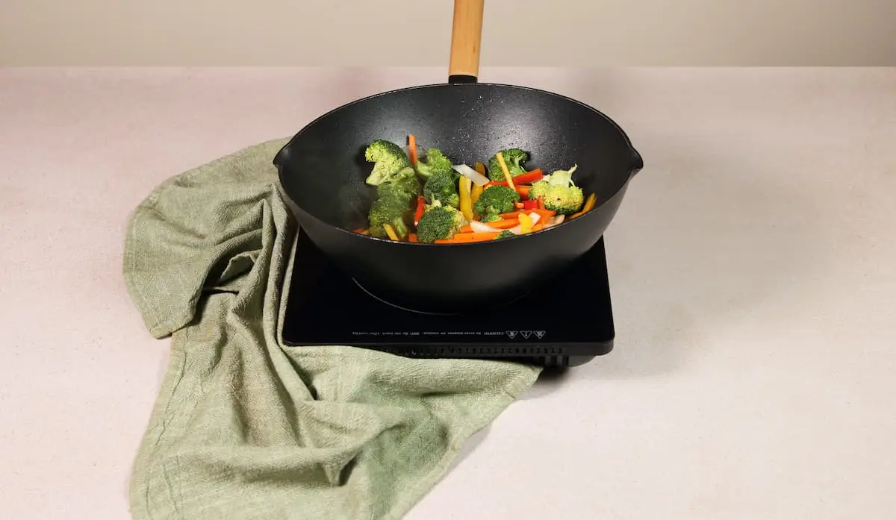
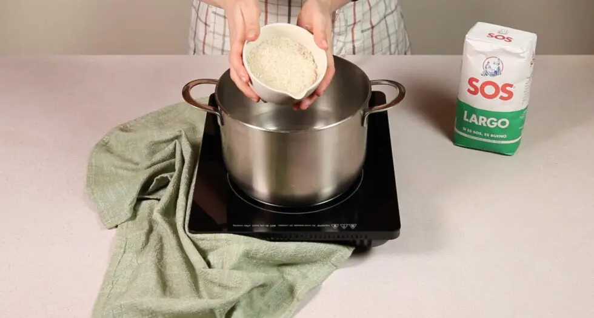
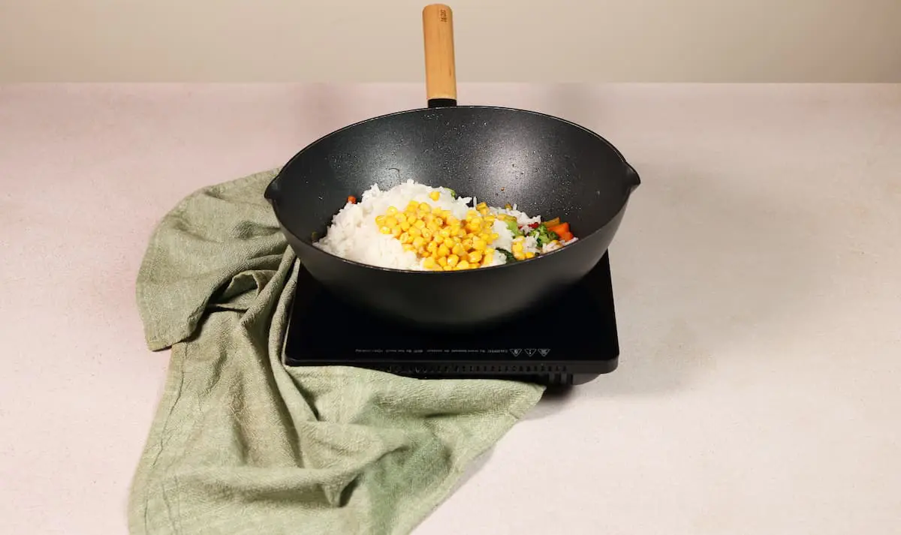
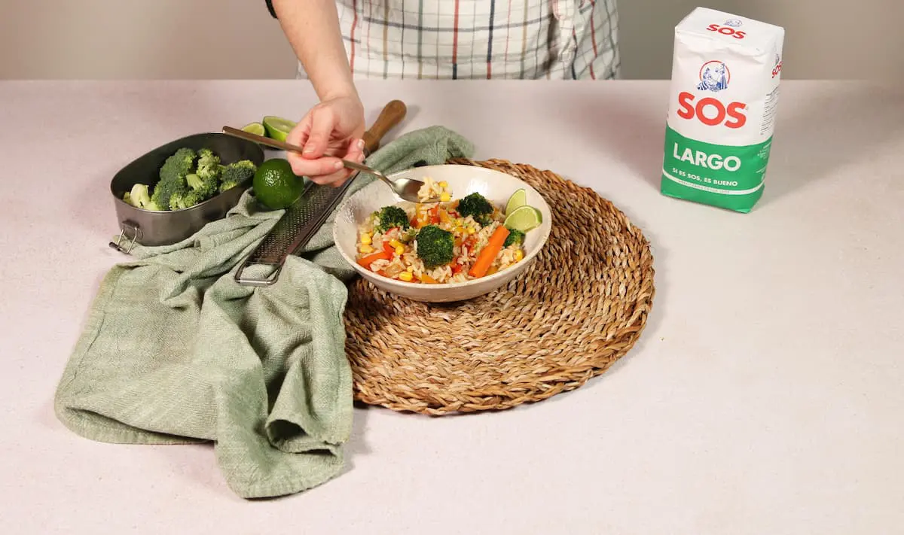
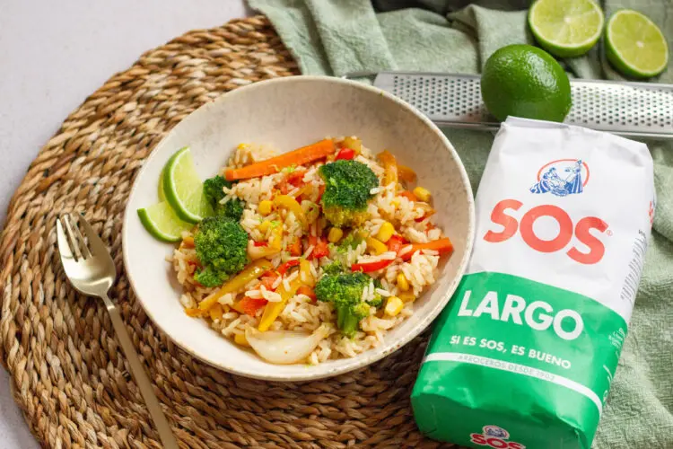

Para comenzar esta elaboración, comienza preparando las verduras. Corta la zanahoria, el pimiento rojo y el pimiento amarillo en bastones, pica una cebolla en juliana y prepara los 100g de brócoli en pequeños floretes. Calienta un poco de aceite en un wok o sartén grande a fuego alto. Añade las verduras cortadas y saltea moviéndolas constantemente para que se cocinen de manera uniforme y mantengan su textura crujiente.
Una vez las verduras estén al dente, salpiméntalas al gusto. A continuación, añade salsa de soja, ajustando la cantidad según prefieras para darle ese toque umami característico del salteado. La salsa de soja también aportará color y sabor al conjunto.
A continuación, cuece los 200g de arroz durante 11/13 minutos en una olla con agua hirviendo y una pizca de sal. La proporción recomendada es de dos partes de agua por una de arroz.
Agrega en el wok junto a las verduras el arroz ya cocido y escurrido. Añade también los 70g de maíz al gusto. Mezcla bien todos los ingredientes para que el arroz se impregne de los sabores del salteado y la salsa de soja. Deja cocinar durante unos minutos para que los sabores se integren bien.
Finalmente, retira el wok del fuego y sirve el arroz con verduras salteadas. Decora lima por encima para aportar un toque cítrico que realzará los sabores del plato.
El arroz con verduras salteadas es un plato versátil, nutritivo y delicioso que se puede adaptar fácilmente a diferentes gustos y necesidades dietéticas. Siguiendo estos consejos y trucos, podrás preparar un plato excepcional que deleitará a tus comensales y enriquecerá tu repertorio culinario.
